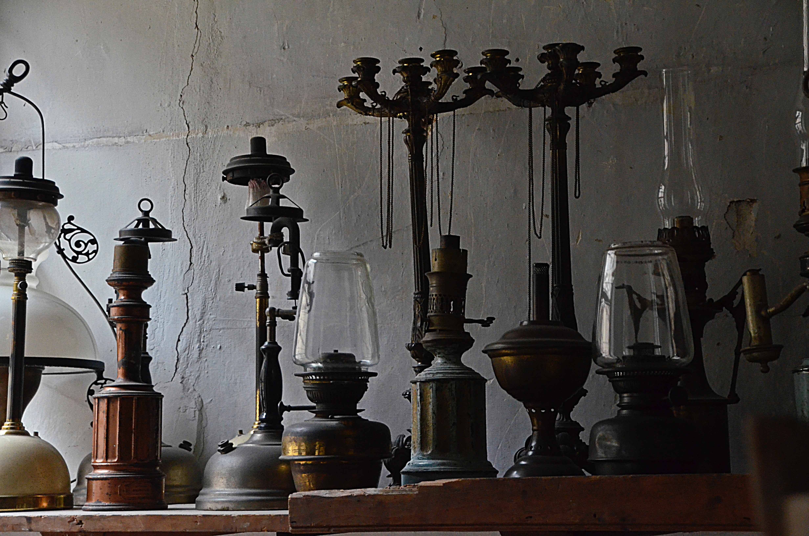

Vintage, The word vintage was first used in the early 15th century. It was taken from the Old French vendage, meaning wine harvest. This word was taken from the Latin vinum (wine) and demere (to remove).
Vintage, in winemaking, is the process of picking grapes and creating the finished product (see Harvest (wine)). A vintage wine is one made from grapes that were all, or primarily, grown and harvested in a single specified year. In certain wines, it can denote quality, as in Port wine, where Port houses make and declare vintage Port in their best years. From this tradition, a common, though incorrect, usage applies the term to any wine that is perceived to be particularly old or of a particularly high quality.
Most countries allow a vintage wine to include a portion of wine that is not from the year denoted on the label. In Chile and South Africa, the requirement is 75% same-year content for vintage-dated wine. In Australia, New Zealand, and the member states of the European Union, the requirement is 85%.